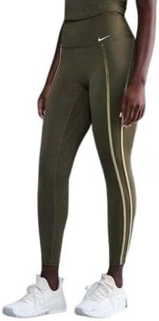
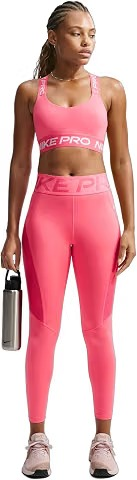
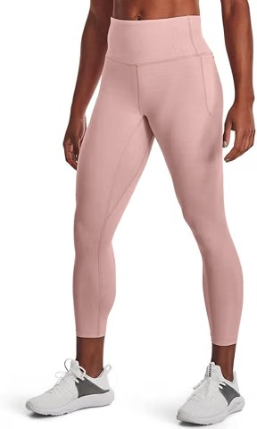
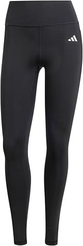
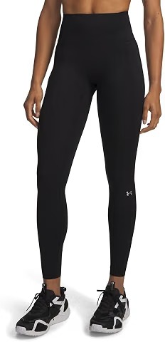
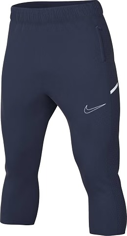
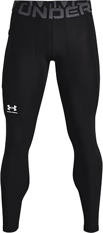
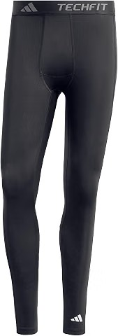
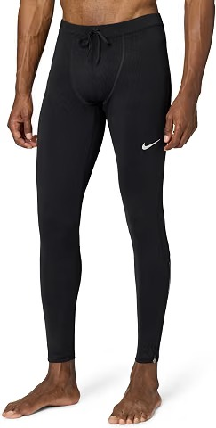
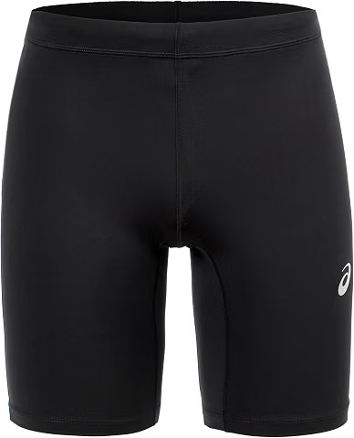

Mejores mallas deportivas de hombre y mujer
Una buena malla no se nota: no se baja, no se transparenta, no roza y no se te queda empapada a mitad de sesión. Si la que usas hace alguna de esas cosas, esta guía te ayuda a elegir entre 5 modelos de mujer y 5 de hombre.
Las mallas son la prenda que más se usa en el gimnasio y también una de las que más se compran mal. Se elige por el color o por el precio, y al tercer lavado ya ha perdido forma o se ha vuelto transparente. Hemos seleccionado diez modelos de marcas muy extendidas, cinco para mujer y cinco para hombre, y para cada uno te contamos para qué sirve y cuándo no es la mejor compra.
Cómo elegir una malla deportiva
Antes de mirar modelos, fíjate en cinco cosas. Son las que de verdad cambian cómo te sientes durante el entrenamiento.
Nivel de compresión. Una malla de compresión sujeta el músculo y da sensación de firmeza. Es muy útil en fuerza y en carrera. Una malla de ajuste normal es más cómoda para yoga, pilates o ir al gimnasio sin presión.
Largo. La corta o 3/4 es más fresca y deja libertad de movimiento. La 7/8 es la más polivalente. La larga abriga y protege en invierno o al aire libre.
Tejido. Busca tejidos técnicos que evacúen el sudor y sequen rápido. El algodón puro absorbe y se queda mojado, algo que se nota en sesiones largas.
Cintura. Una cintura ancha y firme evita que la malla se baje en sentadillas o en carrera. En las de mujer, el talle alto es lo más habitual. En las de hombre, fíjate en que el cordón o la banda no apriete en la barriga.
Costuras y transparencia. Las costuras planas evitan rozaduras. Y la prueba clásica: sentadilla profunda delante del espejo y con buena luz. Si se transparenta, no sirve para el gimnasio.
Consejo: si vas a entrenar en un gimnasio con aire acondicionado, no necesitas la malla más técnica del mercado. Pero si entrenas al sol o sudas mucho, el tejido es lo primero en lo que debes fijarte.
Las 5 mejores mallas deportivas de mujer
1. Nike Dri-FIT One 7/8: la más polivalente

Es la malla que más se parece a un «todoterreno». Lleva el tejido Dri-FIT de Nike, pensado para evacuar el sudor, y un largo 7/8 que funciona igual de bien en el gimnasio, en una carrera suave o en una clase de yoga. Si buscas una sola malla para todo y no quieres complicarte, empieza por aquí.
Lo que conviene mirar es la ficha concreta que eliges: Nike vende varias versiones, con distinta altura de cintura y distinto tacto. Y si buscas compresión firme para levantar pesado, hay opciones más ajustadas.
2. Nike Pro Sculpt: la que más sujeta

La línea Pro es la rama más ajustada de Nike. Este modelo apuesta por una sujeción alta en cintura y muslo, que se agradece en sentadillas, peso muerto y cualquier ejercicio en el que no quieras estar tirando de la prenda hacia arriba.
Al ser tan ajustada, la talla importa: si dudas entre dos, mira las opiniones de otras compradoras sobre el tallaje. No es la más fresca para verano, así que mejor en gimnasio con aire acondicionado que corriendo al sol.
3. Under Armour Meridian: la más cómoda

La Meridian es de las mallas de Under Armour que más gustan por su tacto suave. Es cómoda, no aprieta de más y sirve para entrenar, para yoga o pilates y también para el día a día. Es una buena elección si te agobian las mallas muy compresivas.
A cambio, es menos técnica que una malla de compresión. Para entrenamientos de máxima intensidad o carrera larga, otras opciones de esta lista rinden mejor.
4. adidas Optime Training: buena relación calidad-precio

La gama Optime es la apuesta de adidas para el entrenamiento. Combina un corte pensado para moverte con un tejido transpirable y suele encontrarse a un precio razonable, con descuentos frecuentes. Para quien empieza o entrena tres o cuatro días a la semana es una compra tranquila.
Hay varias versiones (largas, 7/8 y cortas) y con o sin bolsillo. Comprueba el largo en la ficha antes de comprar para no llevarte una sorpresa.
5. Under Armour Vanish: para entrenamiento intenso

La gama Vanish está pensada para entrenar fuerte: sesiones de fuerza, funcional, HIIT o clases dirigidas. Es una malla más técnica y deportiva que la Meridian, con un tacto más firme.
Es una de las más caras de la lista, y no hace falta pagar tanto si solo vas a hacer paseos o yoga. Merece la pena si sudas mucho y notas que otras mallas se deforman o se transparentan.
Comparativa de mallas de mujer
| Malla | Mejor para |
|---|---|
| Nike Dri-FIT One 7/8 | La más polivalente |
| Nike Pro Sculpt | La que más sujeta |
| Under Armour Meridian | La más cómoda |
| adidas Optime Training | Buena relación calidad-precio |
| Under Armour Vanish | Para entrenamiento intenso |
Las 5 mejores mallas deportivas de hombre
1. Nike Pro Dri-FIT 3/4: la más versátil

La malla corta de compresión de Nike es un clásico del gimnasio. Es ajustada, lleva tejido Dri-FIT para el sudor y el largo 3/4 evita que se enrolle bajo el pantalón corto. Funciona para fuerza, funcional, cardio y entrenamientos como HYROX.
Ojo con el largo: al ser 3/4 no abriga en invierno. Si entrenas al aire libre con frío, combina con una larga o elige una versión completa.
2. Under Armour HeatGear Armour: compresión y secado rápido

HeatGear es la tecnología de Under Armour para tejidos ajustados que secan rápido. Esta malla ofrece compresión continua, buena sujeción en el muslo y funciona bien debajo de un pantalón corto o sola en sesiones de calor.
Es una opción muy completa si sudas mucho. Como todas las de compresión, notarás que aprieta más que una malla de running holgada, algo que a unos les encanta y a otros les molesta.
3. adidas Techfit: la mejor para fuerza

Techfit es la línea de compresión de adidas. Va muy pegada al cuerpo y mantiene el músculo sujeto, algo que se agradece en sentadillas, zancadas y peso muerto. El tejido transpirable ayuda a que no se acumule el calor.
Si prefieres una prenda más suelta o para uso diario, probablemente te resulte demasiado ajustada. Para el gimnasio, en cambio, es una apuesta segura.
4. Nike Dri-FIT Phenom: para correr

Es una malla pensada para correr: tejido que absorbe el sudor, buen ajuste y bolsillos en la cintura para llaves o móvil. Las mallas de running de Nike suelen incluir esos bolsillos, un detalle muy práctico para salir a rodar.
Para el gimnasio es menos específica que las de compresión. Si corres tres o más días a la semana, es de las que más sentido tienen.
5. ASICS Road Tight: para rodar en frío

Una malla de running larga, de las clásicas, para salir a rodar cuando baja la temperatura. Va ajustada sin ser extrema y se mueve bien en la zancada. Se encuentra en un abanico amplio de tallas.
Es una opción sensata si buscas calidad de running sin pagar el precio de las marcas más premium. En verano será calurosa, así que piensa en el clima donde vas a entrenar.
Comparativa de mallas de hombre
| Malla | Mejor para |
|---|---|
| Nike Pro Dri-FIT 3/4 | La más versátil |
| Under Armour HeatGear Armour | Compresión y secado rápido |
| adidas Techfit | La mejor para fuerza |
| Nike Dri-FIT Phenom | Para correr |
| ASICS Road Tight | Para rodar en frío |
Errores comunes al comprar mallas deportivas
- Elegir solo por el precio. Una malla muy barata suele perder forma y transparentarse antes. Con ofertas, las marcas conocidas bajan mucho.
- No mirar el tallaje. Las mallas de compresión van muy ajustadas y cada marca calza diferente. Lee las opiniones sobre la talla antes de comprar.
- Usar la misma para todo. La malla para levantar pesas no es la mejor para correr una hora al sol. Si entrenas varios deportes, merece la pena tener dos.
- Comprar color claro sin probar. Los colores claros transparentan más. Si dudas, elige negro o un tono oscuro.
- Entrenar sin calentar. La mejor malla no compensa un cuerpo frío. Tienes una rutina sencilla en nuestro calentamiento de 8 minutos.
Si además estás preparando una prueba como HYROX, no olvides el calzado: tienes nuestra guía de mejores zapatillas para entrenamiento HYROX, y para salir a correr, la de zapatillas de running.
Cómo cuidarlas para que duren más
Lávalas del revés, con agua fría o templada y un programa suave. Evita el suavizante, porque tapa las fibras y reduce la capacidad del tejido para evacuar el sudor. No las metas en la secadora: el calor estropea el elastano y la malla pierde recuperación. Déjalas secar al aire, lejos de radiadores. Y no las dejes en la bolsa de deporte húmedas, porque el olor se queda en el tejido. Si entrenas a diario, tener dos o tres mallas y rotarlas alarga mucho su vida útil.
Preguntas frecuentes sobre mallas deportivas
¿Qué es mejor para entrenar, malla larga, 7/8 o corta?
Depende del clima y del ejercicio. La corta da libertad y frescura, la 7/8 es la más polivalente y la larga abriga en invierno. Para el gimnasio, la 7/8 suele ser la más cómoda.
¿Cómo sé si una malla se transparenta?
Pruébala con una sentadilla profunda delante de un espejo y con buena luz. En compras online, lee las opiniones de otras compradoras sobre la transparencia, sobre todo en colores claros.
¿Compresión o ajuste normal?
La compresión sujeta el músculo y suele gustar en fuerza o carrera. El ajuste normal es más cómodo para yoga, pilates o uso diario. No es cuestión de que una sea mejor, sino de lo que te resulte cómodo.
¿Cómo lavo las mallas para que duren más?
Lávalas del revés, con agua fría o templada, sin suavizante y sin secadora. El suavizante tapa las fibras del tejido y reduce su capacidad para evacuar el sudor.
¿Cuánto cuesta una buena malla deportiva?
Hay opciones decentes desde unos 20 o 30 euros y modelos de marca que suben a más de 50. Mira el precio actualizado en Amazon antes de comprar, porque cambia mucho a lo largo del año.
Conclusión: elige según cómo y dónde entrenas
No hay una malla perfecta, hay una que encaja con tu deporte, tu clima y tu forma de moverte. Si dudas, empieza por la Nike Dri-FIT One en mujer o la Nike Pro Dri-FIT en hombre, que son las más polivalentes de la lista. Comprueba el precio actualizado en Amazon antes de decidir, porque varía mucho durante el año.